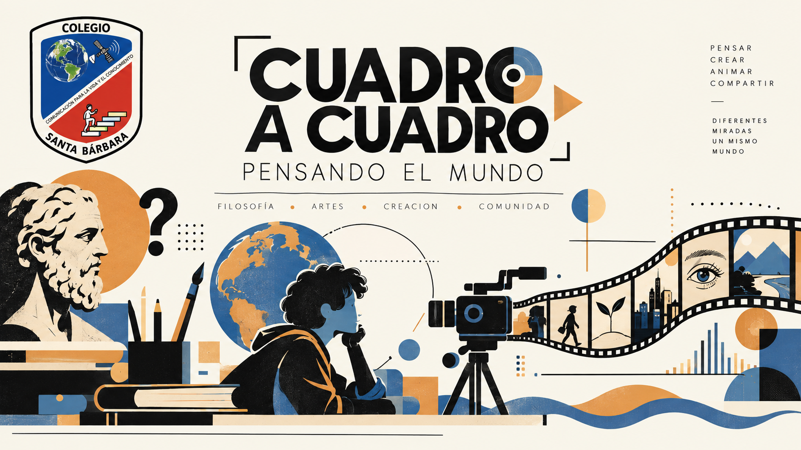

Video 1 · Introducción al Stop Motion
Primer recurso audiovisual del curso para iniciar el proceso de animación.

Una ruta de trabajo para transformar una pregunta filosófica en una obra audiovisual de stop motion: investigar, imaginar, escribir, diseñar, animar y reflexionar.
Recurso Educativo Digital interdisciplinar para grado 11 que articula Filosofía y Educación Artística mediante Aprendizaje Basado en Proyectos y uso controlado de inteligencia artificial generativa.
El proceso parte de un problema que pueda ser pensado, discutido y convertido en una decisión narrativa.
La búsqueda y lectura crítica sostienen las decisiones conceptuales y argumentativas.
Guion, storyboard, planos, escenarios, personajes, sonido y animación convierten ideas en imágenes.
La IA funciona como apoyo autorizado y trazable; el trabajo propio precede a la consulta tecnológica.
Abre cada fase para consultar propósito, actividades, evidencias, uso de IA y producto esperado.
La propuesta establece autoría, transparencia, verificación y protección de la información como principios de uso.
| Campo | Qué registrar |
|---|---|
| Herramienta | Nombre de la plataforma utilizada. |
| Propósito | Para qué se realizó la consulta. |
| Prompt | Texto exacto de la instrucción. |
| Resultado | Qué respuesta o insumo produjo. |
| Decisión del equipo | Aceptado, modificado o rechazado; justificar cuando sea relevante. |
| Evidencia | Enlace o captura de la conversación. |
Consulta el recurso visual de orientación y utiliza los documentos de trabajo integrados en la ruta.
Consulta los dos primeros videos directamente desde esta página y continúa con el siguiente episodio cuando estés listo.
Primer recurso audiovisual del curso para iniciar el proceso de animación.
Segundo recurso para avanzar en la preparación y realización de la animación.
Se abrirá el siguiente video de la lista de reproducción de YouTube.
Parámetros técnicos que deben estar resueltos antes de comenzar la animación.
Capturar aproximadamente 12 fotogramas por cada segundo de animación.
Bloquear la rotación de pantalla y trabajar en formato widescreen.
Trípode o soporte asegurado a la mesa; evitar desplazamientos accidentales.
Base y escenografía estables; controlar la entrada de luz para evitar flicker.
Archivo .MP4 nombrado con el formato definido por el equipo/curso.
Video de 1 a 3 minutos con rodaje, maqueta, iluminación, problemas y colaboración.
Fase 6 completa, autoevaluación, enlaces y registro de prompts.
Afiche promocional vertical en JPG o PNG de alta calidad.
Las rúbricas y listas de control permiten autoevaluación, seguimiento y valoración conjunta de Filosofía y Artes.
| Momento | Qué revisar | Evidencia | Estado |
|---|---|---|---|
| Fase 1–2 | Pregunta, fuentes, comprensión y argumentación. | Ficha, lecturas, mapa de ideas. | ☐ En proceso ☐ Revisado |
| Fase 3–4 | Coherencia narrativa y relación con el problema filosófico. | Propuesta + guion literario. | ☐ En proceso ☐ Revisado |
| Fase 5 | Visualización completa de escenas, planos, ángulos y sonido. | Storyboard + bocetos + pruebas. | ☐ En proceso ☐ Revisado |
| Fase 6 | Configuración técnica, estabilidad, animación, documentación y posproducción. | Video + BTS + matriz. | ☐ En proceso ☐ Revisado |
| Fase 7 | Reflexión, sustentación, créditos, atribuciones y licencia. | Obra + reflexión + enlaces. | ☐ En proceso ☐ Aprobado |
El producto final reúne pensamiento filosófico, investigación, escritura, creación visual, animación, trabajo colaborativo y reflexión sobre el propio proceso.
Título: Cuadro a cuadro, pensando el mundo: Formato de Sistematización Digital para la construcción de proyectos audiovisuales.
Autores: Oscar David Triana Ordóñez · Viviana Carolina Silva Romero
Institución: IED Santa Bárbara – Bogotá
Nivel: Educación media · grado 11
Áreas: Filosofía y Educación Artística
Tipo: Recurso Educativo Digital (RED)
Palabras clave: filosofía · artes audiovisuales · ABP · IA generativa · lectura crítica · escritura argumentativa · stop motion · interdisciplinariedad
Guía de referencia: Guía para el uso de IA generativa en educación e investigación · UNESCO ↗